Escola Estadual Professora Maria Aldineide Pessoa Gomes Coité do Noia - AL
Versão do painel 1.20 · Novembro de 2026
Sumário
1. Apresentação
2. Como entrar no painel
3. Conhecendo a tela
4. Início
4.1 Situação do roteador e dos APs
4.2 Uso da internet
5. Usuários
5.1 Cadastrados
5.2 Visitantes (senhas temporárias)
5.3 Perfis e horário
5.4 Importar planilha
6. Conectados
6.1 Conectados agora
6.2 Todos os aparelhos
6.3 Consumo
7. Aparelhos (liberar e bloquear)
8. Regras de acesso
8.1 Rede Alunos
8.2 Sites bloqueados
9. Sistema
9.1 Aviso
9.2 Configurações
9.3 Administradores
9.4 Relatório mensal
9.5 Backup
9.6 Histórico
10. Troca de senha pelo Wi-Fi
11. Perguntas frequentes
12. Boas práticas de segurança
Sobre as imagens deste manualAs telas foram capturadas com dados fictícios de demonstração. Nomes, senhas e endereços que aparecem nelas não são da escola.
1. Apresentação
O Painel do Hotspot é o programa usado pela escola para administrar o Wi-Fi sem precisar mexer diretamente no roteador (MikroTik). Por ele é possível cadastrar quem pode usar a internet, criar senhas para visitantes, acompanhar quem está conectado, liberar ou bloquear aparelhos e controlar quando a rede dos alunos fica aberta.
As redes da escola
Rede (Wi-Fi)
Para quem
Como entra
Administrativo
Professores, funcionários e visitantes
Conecta no Wi-Fi e faz login com usuário e senha na tela de entrada (hotspot), aceitando os termos de uso.
Alunos
Alunos
Rede aberta, sem senha, que só funciona nos horários definidos (por exemplo, nos intervalos).
O que dá para fazer no painel
Cadastrar, alterar, desativar e excluir usuários do Wi-Fi, um a um ou por planilha.
Criar senhas temporárias para visitantes, que expiram sozinhas, e imprimir cartões com QR code.
Ver quem está conectado, desconectar, liberar ou bloquear aparelhos.
Abrir e fechar a rede dos alunos por horário ou na hora.
Bloquear sites (por exemplo, apostas).
Publicar um aviso na tela de login do Wi-Fi.
Acompanhar se os pontos de acesso (APs) estão no ar e o uso da internet dos últimos dias.
Gerar o relatório do mês para imprimir ou salvar em PDF.
Deixar cada pessoa trocar a própria senha do Wi-Fi pelo celular.
Fazer cópias de segurança e consultar o histórico de quem fez o quê.
Limite da licençaA licença do roteador permite até 200 pessoas logadas ao mesmo tempo no Wi-Fi Administrativo. Os cadastros podem passar de 200; o limite vale para quem está conectado ao mesmo tempo. A rede Alunos não entra nessa conta.
2. Como entrar no painel
No computador da escola onde o painel está instalado, dê dois cliques no atalho "Painel do Hotspot" da Área de Trabalho (ou procure no Menu Iniciar). Ele abre numa janela própria.
De outro computador da rede da escola, abra o navegador no endereço informado pelo responsável pela TI (algo como http://192.168.88.10:8080).
Digite o usuário e a senha de administrador e clique em Entrar.
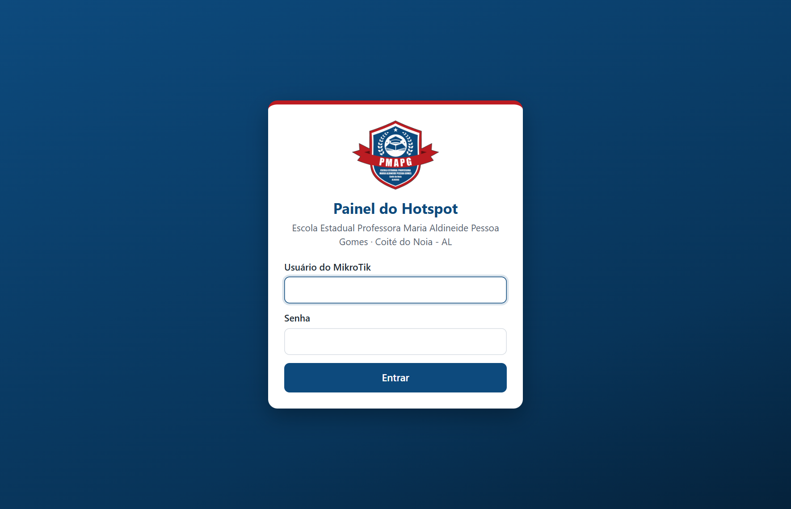
Figura 1 – Tela de entrada do painel
Quem pode entrarSó pessoas com usuário de administrador cadastrado em Sistema → Administradores. Cada gestor deve ter o seu próprio usuário.
Depois de 60 minutos sem uso, o painel pede a senha de novo.
5 senhas erradas seguidas bloqueiam o computador por 15 minutos.
Ao terminar, clique em Sair, no canto superior direito.
3. Conhecendo a tela
No topo ficam o nome da escola, o usuário que entrou e o botão Sair. Logo abaixo estão as abas, cada uma com uma cor:
Aba
Subabas (botões arredondados)
Início
Resumo do roteador, dos APs e do uso da internet
Usuários
Cadastrados · Visitantes · Perfis e horário · Importar planilha
Ao clicar numa aba, o painel abre sempre a primeira subaba. A tecla F5 recarrega a tela em que você está.
As cores dos botões
Cor
Significado
Exemplos
Azul
Ação principal
Novo, Salvar, Editar, Atualizar
Verde
Liberar, ativar, criar
Ativar, Liberar, Exportar
Vermelho
Remover, encerrar, bloquear
Excluir, Bloquear, Encerrar agora
Laranja
Alterar, desativar
Desativar, Nova senha
Roxo
Imprimir
Imprimir, Imprimir todos
ConfirmaçãoAções que não podem ser desfeitas (excluir, encerrar, bloquear) sempre pedem confirmação antes. Leia a mensagem e clique no botão de confirmar só se tiver certeza.
4. Início
Mostra a saúde do roteador, a situação dos pontos de acesso e o uso da internet.
4.1 Situação do roteador e dos APs
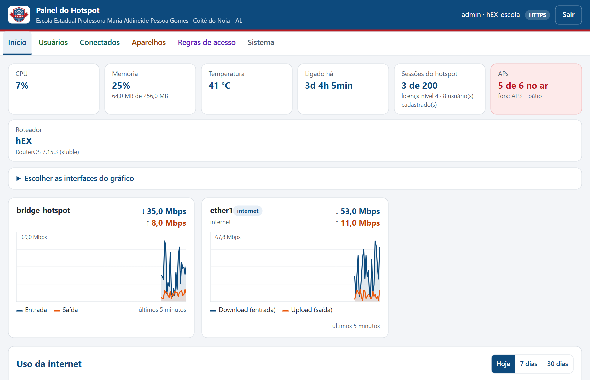
Figura 2 – Início
CPU, Memória e Temperatura: ficam em vermelho quando estão altas.
Roteador: modelo, versão do RouterOS, há quanto tempo está ligado e se a hora está certa (sincronizada pelo NTP com a.ntp.br). Fica vermelho quando o relógio tem problema.
Sessões do hotspot: quantas pessoas estão logadas no Wi-Fi e o limite da licença (ex.: 3 de 200). Fica amarelo a partir de 160 e vermelho a partir de 190.
APs: quantos pontos de acesso estão no ar (ex.: 5 de 6 no ar). Quando algum cai, o cartão fica vermelho e mostra o nome do AP fora do ar. Os APs são cadastrados em Sistema → Configurações (item 9.2).
Gráficos: o tráfego dos últimos 5 minutos. O marcado como internet é o link da operadora. Em Escolher as interfaces do gráfico dá para mostrar outras.
Atualização do painel e Atualização do RouterOS, no fim da tela: avisam quando há versão nova do painel ou do sistema do roteador (a atualização em si é feita pelo responsável pela TI). A faixa amarela com o aviso aparece só no Início; fechada no ✕, só volta quando sair outra versão.
Faixa vermelha "Relógio do MikroTik"Aparece quando a hora do roteador está mais de 2 minutos diferente da hora do computador, ou quando o NTP está desligado ou sem sincronia. Com a hora errada, as senhas de visitante e o horário da rede Alunos vencem na hora errada: chame o responsável pela TI.
4.2 Uso da internet
Logo abaixo dos cartões fica o histórico de uso da internet, registrado pelo painel a cada 5 minutos. Escolha o período nos botões do canto.
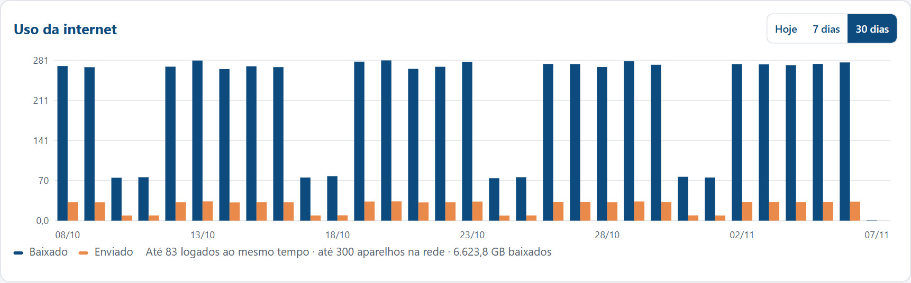
Figura 3 – Uso da internet nos últimos 30 dias
Hoje e 7 dias: velocidade de download (azul) e de upload (laranja), em Mbps, ao longo do tempo.
30 dias: quantos GB foram baixados e enviados em cada dia. Dias baixos costumam ser sábados, domingos e feriados.
Abaixo do gráfico aparecem o máximo de pessoas logadas ao mesmo tempo, o máximo de aparelhos na rede e o total do período.
Passe o mouse sobre uma barra para ver os números daquele dia.
O gráfico está vazio?O registro depende do Serviço do painel, ativado em Sistema → Configurações por um administrador full, e só acontece enquanto o computador do painel estiver ligado.
5. Usuários
5.1 Cadastrados
Lista os usuários fixos do Wi-Fi Administrativo (professores, funcionários e alunos cadastrados), com a senha, o nome/turma, o perfil e a situação. Os visitantes não aparecem aqui: ficam na subaba própria (item 5.2). O resumo acima da lista mostra quantos são, quantos estão ativos e quantas sessões da licença ainda estão disponíveis.
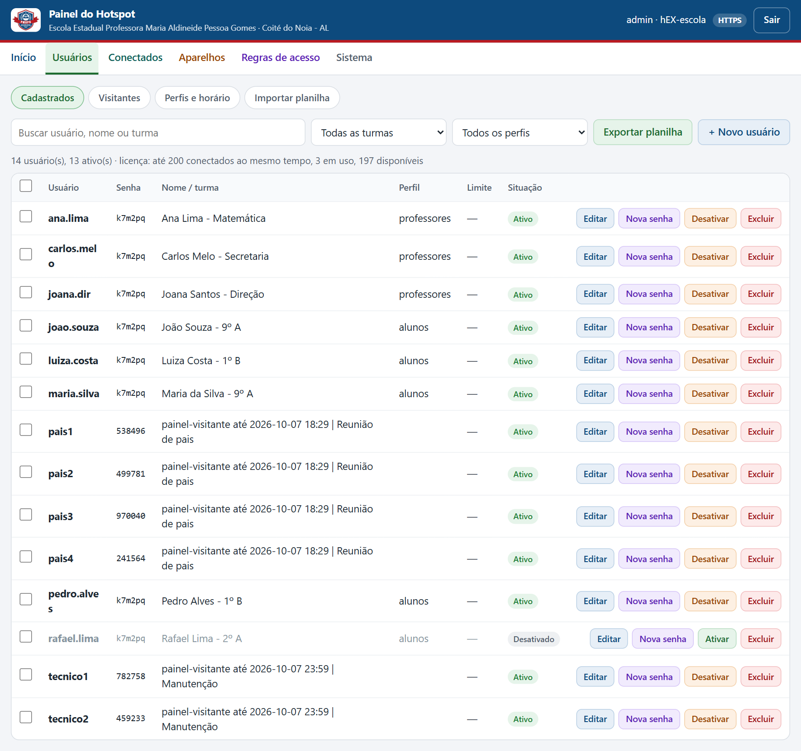
Figura 4 – Usuários cadastrados
Cadastrar um usuário
Clique em + Novo usuário.
Preencha o Usuário (sem acentos nem espaços, ex.: maria.silva). A senha já vem gerada; clique em Gerar para outra ou digite uma.
Em Nome / turma, use o formato Nome - Turma (ex.: Maria da Silva - 9º A). A turma é usada no filtro e no relatório de consumo.
Escolha o Perfil: o tempo de cada conexão e o horário de uso vêm dele (item 5.3). Prender a um aparelho é opcional.
Clique em Salvar.
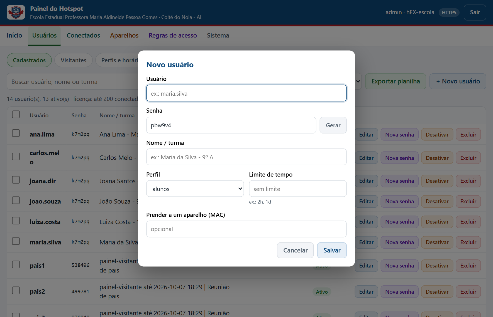
Figura 5 – Cadastro de usuário
No dia a dia
Editar: muda nome, perfil, senha ou o aparelho preso.
Nova senha: gera uma senha nova na hora e oferece imprimir o cartão. A senha antiga deixa de funcionar.
Desativar: a pessoa deixa de conseguir entrar, mas o cadastro fica guardado. Ativar devolve o acesso.
Excluir: apaga o usuário.
Seleção em lote: marque as caixas à esquerda para ativar, desativar, mudar de perfil, imprimir credenciais ou excluir vários de uma vez.
Exportar planilha: baixa a lista em Excel, com ou sem as senhas.
5.2 Visitantes (senhas temporárias)
Para palestrantes, pais em reunião, técnicos, aulas e eventos. O tempo de uso só começa a contar no primeiro acesso: até lá o cartão fica guardado. No fim do tempo, a senha some sozinha, mesmo com o painel fechado.
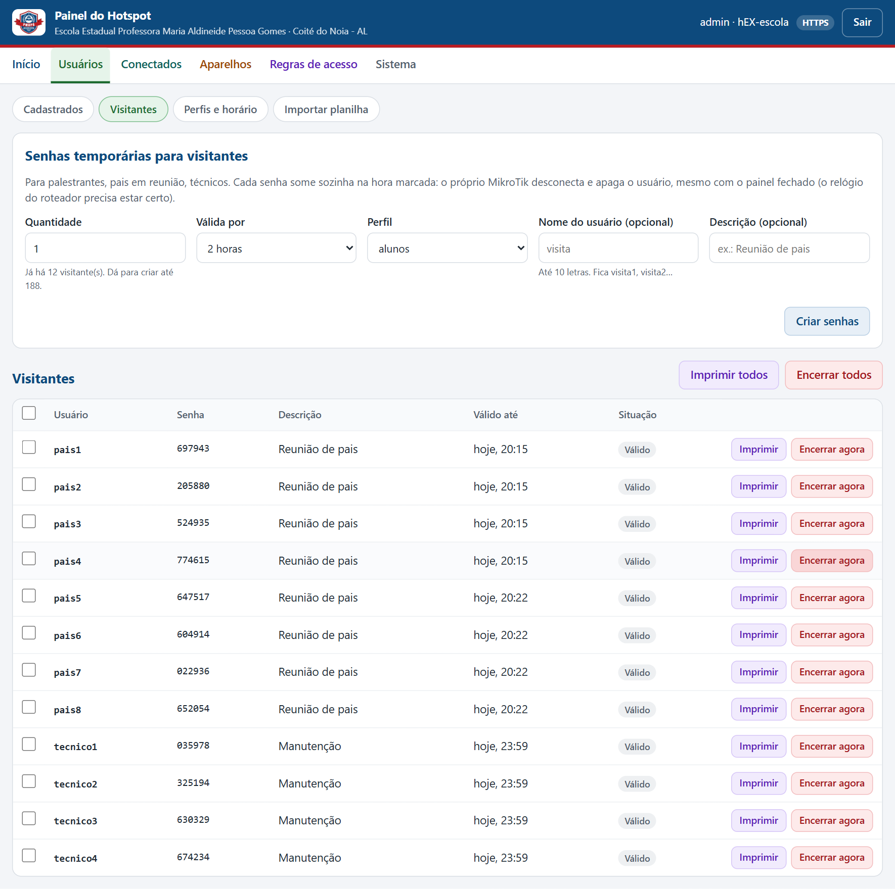
Figura 6 – Visitantes
Informe a Quantidade. Embaixo do campo aparece quantas ainda cabem (até 200, contando as que já existem). Se passar, o painel avisa e não cria.
Escolha o Tempo de uso (1 hora até 7 dias, ou até o fim do dia do primeiro acesso).
Prazo para usar (opcional): data e hora limite para o primeiro acesso. O cartão que ninguém usou até lá some sozinho; quem entrou antes continua com o tempo de uso inteiro. Em branco, o cartão fica guardado até ser usado.
Escolha o Perfil.
Nome do usuário (opcional): digitando pais, as senhas saem como pais1, pais2… Em branco, ficam visita1, visita2… Até 10 letras, sem acento.
Descrição (opcional): aparece na lista e no cartão (ex.: Reunião de pais).
Clique em Criar senhas. O painel avisa quantas foram criadas; elas aparecem na lista abaixo.
ExemploAula no dia 13 com 20 participantes: crie 20 senhas com Tempo de uso de 4 horas, Prazo para usar 13/11 às 23:59 e a descrição Aula X. Quem entrar usa 4 horas a partir do próprio acesso; os cartões que sobrarem somem depois do dia 13.
Lotes
As senhas criadas de uma vez formam um lote. A lista mostra cada lote numa linha com a descrição, o tempo de uso, o prazo, a data de criação e uma barra com quantos cartões já estão em uso. Clique no nome do lote para ver os cartões dele.
Situação de cada cartão: Não usado (guardado), Em uso (com a hora em que vence na coluna Validade), Conectado ou Expirado.
Imprimir lote e Encerrar lote valem para todos os cartões do lote.
Imprimir e Encerrar agora na linha do cartão valem só para ele. Imprimir todos ou a seleção com as caixas também funcionam.
A senha dos visitantes tem sempre 6 números. Antes de imprimir, o painel mostra uma prévia do cartão como vai sair no papel; confira e clique em Imprimir.
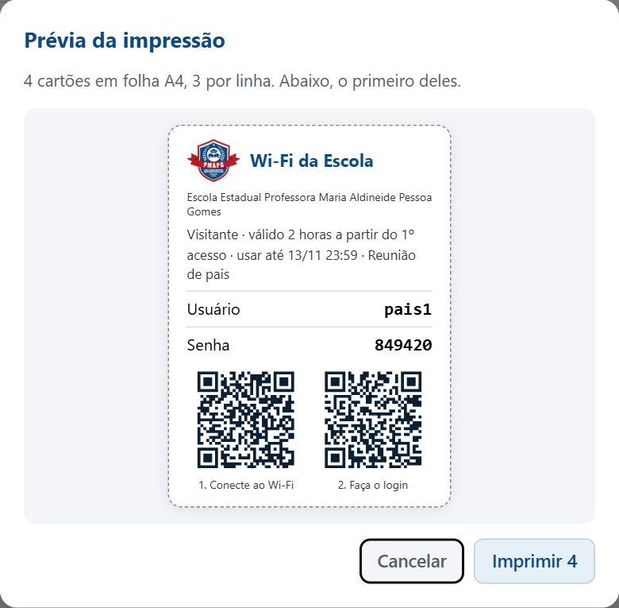
Figura 7 – Prévia da impressão
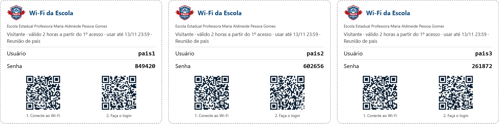
Figura 8 – Cartões impressos (3 por linha numa folha A4)
Como o visitante usa o cartão1. Aponta a câmera do celular para o QR code "Conecte ao Wi-Fi" e entra na rede. 2. Aponta para o QR code "Faça o login": a tela de login abre com usuário e senha já preenchidos; basta aceitar os termos e conectar. Se preferir, pode digitar o usuário e a senha na tela de login.
5.3 Perfis e horário
O perfil define as regras de um grupo de usuários (por exemplo, alunos e professores).
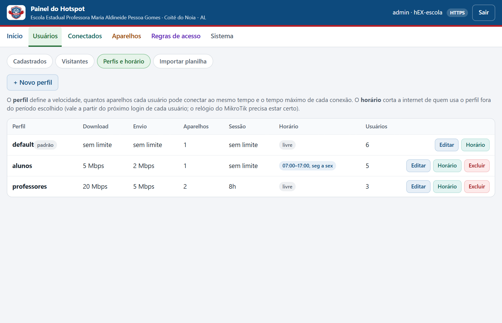
Figura 9 – Perfis e horário
Download / Envio: velocidade máxima de cada pessoa.
Aparelhos: quantos aparelhos o mesmo usuário pode conectar ao mesmo tempo (cada aparelho conta no limite de 200 da licença).
Sessão: tempo máximo de cada conexão.
Horário: limita os dias e horas em que o perfil tem internet (ex.: alunos das 7h às 17h, de segunda a sexta). Fora do horário a pessoa continua no Wi-Fi, mas sem internet.
5.4 Importar planilha
Para cadastrar uma turma inteira de uma vez.
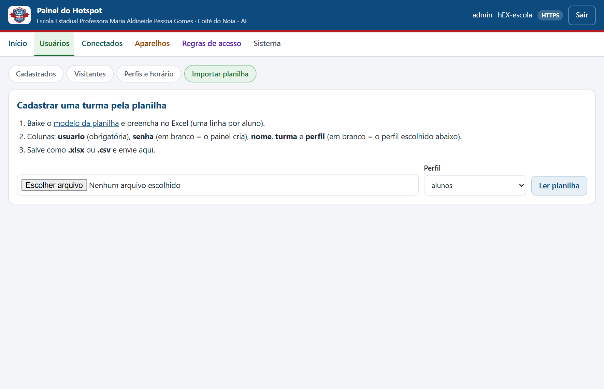
Figura 10 – Importar planilha
Clique em modelo da planilha e preencha no Excel, uma linha por pessoa: usuario (obrigatório), senha (em branco, o painel cria), nome, turma e perfil.
Salve como .xlsx ou .csv, escolha o arquivo, o perfil padrão e clique em Ler planilha.
Confira a prévia: linhas com problema (usuário repetido, já existente, perfil inexistente) aparecem marcadas e são ignoradas.
Clique em Cadastrar e depois em Imprimir credenciais para entregar os cartões.
6. Conectados
6.1 Conectados agora
Quem está logado no Wi-Fi neste momento, com IP, aparelho (MAC), tempo e consumo. Atualiza sozinho a cada 30 segundos.
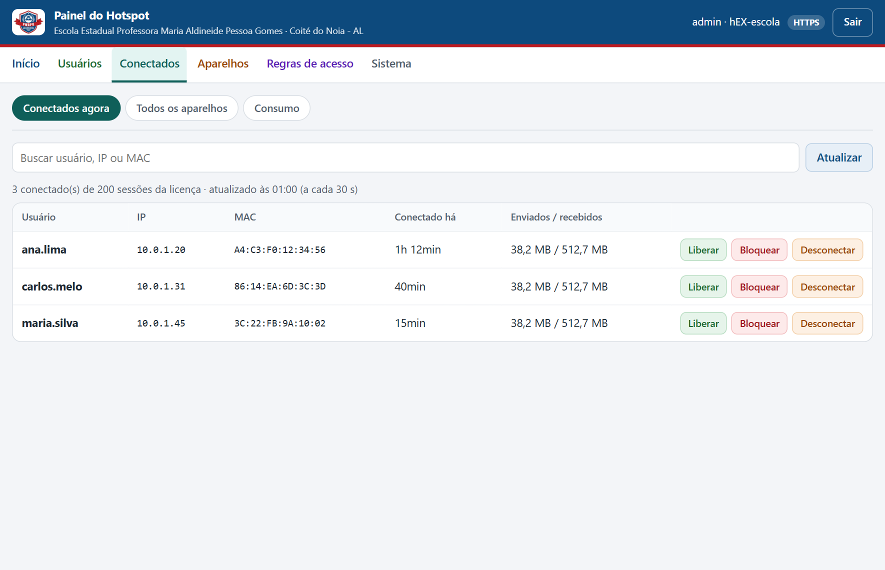
Figura 11 – Conectados agora
Desconectar: encerra a sessão. A pessoa pode entrar de novo pela tela de login.
Liberar: o aparelho passa a navegar sem login (útil para aparelhos da escola).
Bloquear: o aparelho não consegue mais usar a rede.
6.2 Todos os aparelhos
Todos os aparelhos na rede, logados ou não, inclusive os da rede Alunos.
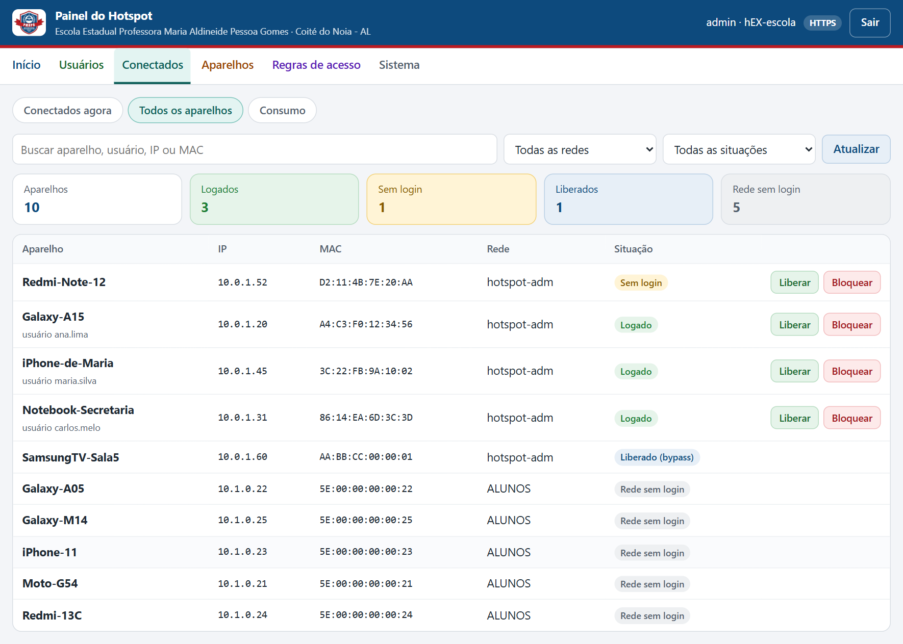
Figura 12 – Todos os aparelhos
Situação
O que quer dizer
Logado (verde)
Entrou com usuário e senha; o usuário aparece embaixo do nome do aparelho.
Sem login (amarelo)
Está no Wi-Fi Administrativo, mas não fez login (sem internet).
Liberado (azul)
Navega sem login (TVs, impressoras).
Bloqueado (vermelho)
Impedido de usar a rede.
Rede sem login (cinza)
Está na rede Alunos, que não tem login.
Use os filtros de rede e de situação e a busca para encontrar um aparelho. Os totais coloridos no topo resumem a situação.
6.3 Consumo
Quanto cada usuário (ou cada turma) usou de internet desde a última vez que os contadores foram zerados.
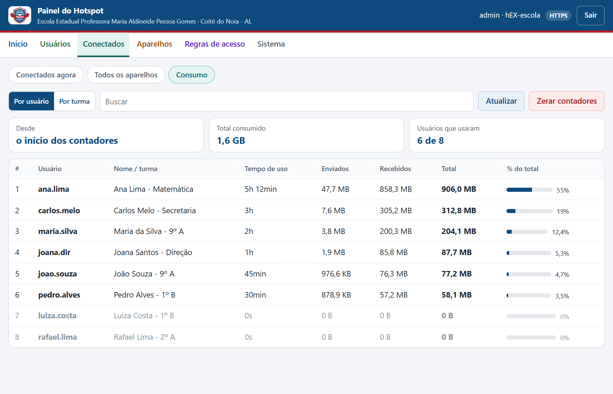
Figura 13 – Consumo
Alterne entre Por usuário e Por turma.
Zerar contadores recomeça a contagem (por exemplo, no início de cada mês).
7. Aparelhos (liberar e bloquear)
Aparelhos liberados navegam sem passar pelo login: TVs, impressoras, computadores da escola. Aparelhos bloqueados não conseguem usar a rede.
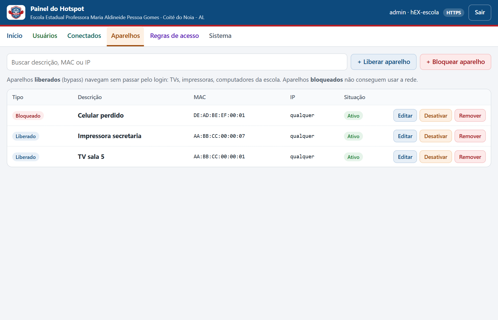
Figura 14 – Aparelhos liberados e bloqueados
Clique em + Liberar aparelho ou + Bloquear aparelho.
Dê uma descrição (ex.: TV sala 5).
Informe o MAC do aparelho, ou abra Escolher entre os aparelhos conectados na rede e clique no aparelho (aparece o nome que ele informou à rede, como SamsungTV-Sala5).
Clique em Salvar.
Desativar suspende a regra sem apagar; Remover apaga.
AtalhoTambém dá para liberar ou bloquear direto em Conectados → Conectados agora ou Todos os aparelhos.
8. Regras de acesso
8.1 Rede Alunos
Controla quando a rede dos alunos tem internet. Quem abre e fecha é o próprio roteador, a cada minuto, mesmo com o painel fechado.
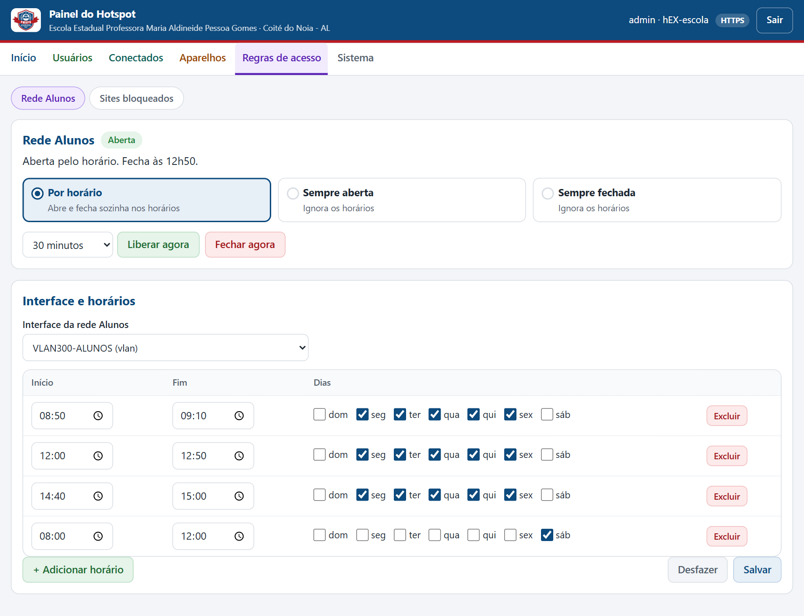
Figura 15 – Rede Alunos
Modo de funcionamento
Modo
O que acontece
Por horário (azul)
Abre e fecha sozinha nos horários da tabela.
Sempre aberta (verde)
Fica aberta o tempo todo; os horários não valem.
Sempre fechada (vermelho)
Fica fechada o tempo todo; os horários não valem.
Liberar ou fechar na hora (modo Por horário)
Escolha o tempo e clique em Liberar agora: a rede abre e fecha sozinha no fim do tempo.
Fechar agora: fecha até o fim do horário atual.
Voltar ao horário normal: cancela a liberação ou o fechamento feito pelo painel.
Interface e horários
Cada linha é um horário com início, fim e os dias da semana marcados.
+ Adicionar horário cria uma linha; Excluir remove.
Clique em Salvar para valer. Desfazer volta ao que estava salvo.
Um horário pode valer só para alguns dias; por exemplo, uma linha só de sábado para um evento.
A interface é a rede dos alunos no roteador (VLAN300-ALUNOS); normalmente não precisa mudar. O painel não deixa escolher a interface da internet nem a da rede Administrativo, para ninguém derrubar a internet da escola por engano.
RelógioOs horários dependem do relógio do roteador. Se a rede abrir ou fechar na hora errada, avise o responsável pela TI.
8.2 Sites bloqueados
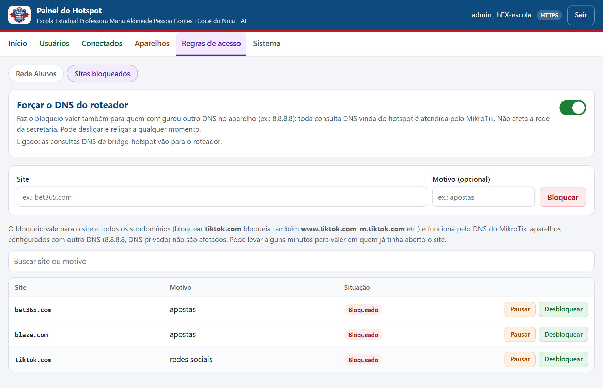
Figura 16 – Sites bloqueados
Digite o endereço do site (ex.: bet365.com) e, se quiser, o motivo.
Clique em Bloquear. Vale para o site e todos os subdomínios (bloquear tiktok.com bloqueia também www.tiktok.com).
Pausar suspende o bloqueio sem apagar; Desbloquear apaga.
A chave Forçar o DNS do roteador faz o bloqueio valer também para quem trocou o DNS do aparelho. Deixe ligada.
Pode levar alguns minutos para valer em quem já estava com o site aberto.
9. Sistema
9.1 Aviso
Um recado que aparece na tela de login do Wi-Fi e na tela de conectado (ex.: "Feira de ciências nesta sexta-feira").
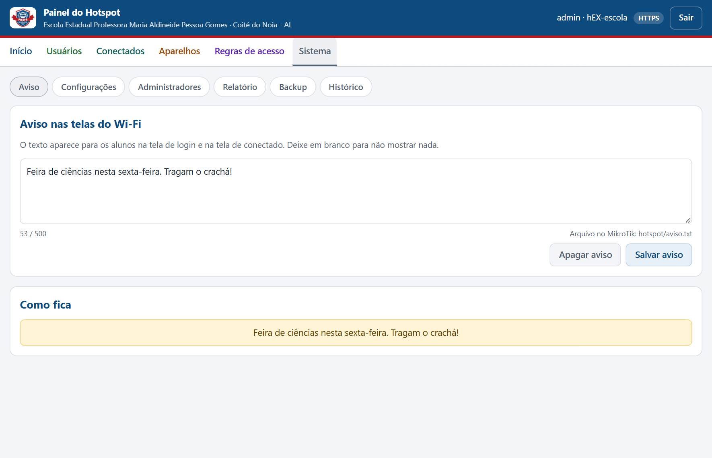
Figura 17 – Aviso
Escreva o texto (até 500 caracteres), confira em Como fica e clique em Salvar aviso. Apagar aviso tira o recado.
9.2 Configurações
Reúne os ajustes gerais do painel, em cartões separados.
Escola
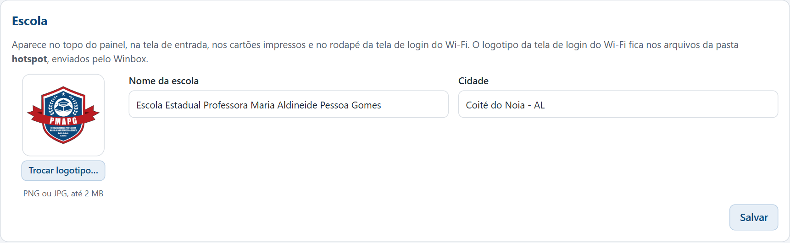
Figura 18 – Escola
Nome, cidade e logotipo usados no topo do painel, na tela de entrada e nos cartões impressos. Ao salvar, o nome e a cidade vão também para o rodapé da tela de login do Wi-Fi. Para trocar o logotipo, clique em Trocar logotipo… (PNG ou JPG, até 2 MB).
Pontos de acesso (APs)
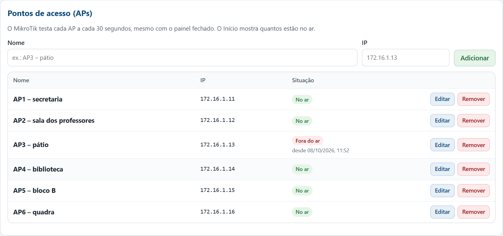
Figura 19 – Pontos de acesso
Lista dos APs da escola que o roteador vigia. Para cadastrar, informe o nome (ex.: AP3 – pátio) e o IP e clique em Adicionar. Cada AP aparece como No ar (verde) ou Fora do ar (vermelho), com a data e a hora em que caiu.
A cada 30 segundos o próprio roteador manda 5 pings para cada AP, mesmo com o painel fechado. O AP só é marcado como fora do ar quando nenhum dos 5 responde; assim, um pacote perdido não vira alarme falso.
Serviço do painel
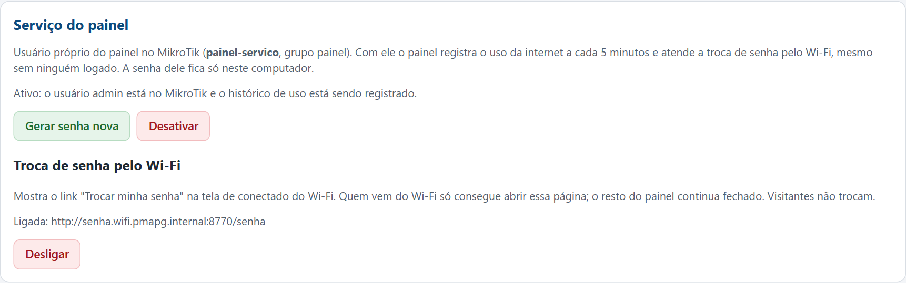
Figura 20 – Serviço do painel e troca de senha pelo Wi-Fi
Usuário próprio do painel no roteador, usado para trabalhar sem ninguém logado: registrar o uso da internet (item 4.2) e atender a troca de senha pelo Wi-Fi (item 10). Só um administrador full ativa ou desativa. A senha desse usuário é criada pelo painel e fica guardada só no computador do painel. Gerar senha nova troca essa senha; Desativar apaga o usuário e para o registro de uso.
Troca de senha pelo Wi-Fi
Liga ou desliga o link "Trocar minha senha" na tela de conectado do Wi-Fi (veja o item 10). Precisa do Serviço do painel ativo.
Conexão com o MikroTik
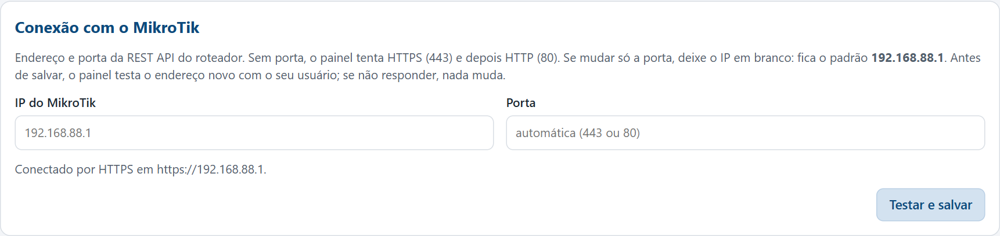
Figura 21 – Conexão com o MikroTik
Endereço e porta do roteador. Só deve ser mudado pelo responsável pela TI. Se só a porta mudar, deixe o IP em branco: fica o padrão 192.168.88.1. O painel testa o endereço novo antes de salvar; se o roteador não responder, nada muda.
Endereço do hotspot e Rede Wi-Fi dos QR codes
Endereço do hotspot: o nome que aparece na barra do navegador na tela de login do Wi-Fi.
Rede Wi-Fi dos QR codes: nome e senha do Wi-Fi usados no QR code "Conecte ao Wi-Fi" dos cartões de visitante.
9.3 Administradores
Quem pode entrar no painel. Só quem entrou com um usuário do grupo full vê os botões desta tela.
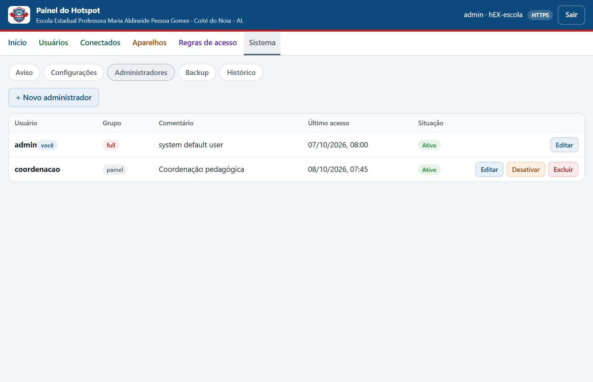
Figura 22 – Administradores
Grupo
O que pode fazer
Indicado para
painel
Usar todas as telas do painel. Não entra no sistema do roteador e não cadastra administradores.
Direção, coordenação, secretaria
full
Tudo, inclusive cadastrar outros administradores e configurar o roteador.
Responsável pela TI
Clique em + Novo administrador, informe o usuário, a senha (mínimo de 8 caracteres; já vem uma gerada), o grupo e um comentário.
Clique em Salvar e anote a senha mostrada no aviso.
O painel não deixa ninguém excluir ou desativar o próprio usuário, nem remover o último administrador full.
9.4 Relatório mensal
Um resumo do uso do Wi-Fi no mês, pronto para apresentar à direção ou guardar.
Escolha o Mês do relatório e clique em Gerar.
Confira na tela e clique em Imprimir / salvar em PDF. Na janela de impressão, escolha a impressora ou Salvar como PDF.
Números do mês: internet baixada e enviada, pico de logados (com dia e hora), pico de aparelhos, visitantes criados e usuários cadastrados.
Uso da internet por dia: GB baixados e enviados em cada dia (precisa do Serviço do painel ativo).
O que foi feito no painel: cadastros, importações, senhas novas, senhas trocadas pelos próprios usuários, sites bloqueados e liberações da rede Alunos fora do horário.
Consumo por turma e Quem mais usou: contados desde o último Zerar contadores (item 6.3).
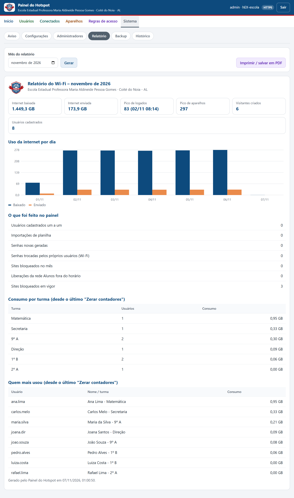
Figura 23 – Relatório mensal
9.5 Backup
O painel guarda sozinho uma cópia por dia (no primeiro acesso do dia) com usuários e senhas, aparelhos, perfis e sites bloqueados, e mantém as últimas 30.
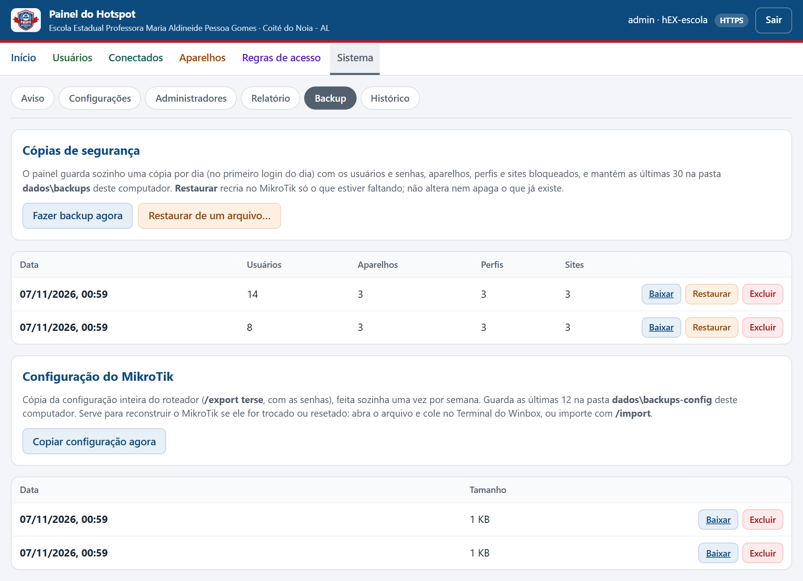
Figura 24 – Backup
Fazer backup agora: cria uma cópia na hora (bom antes de mudanças grandes).
Baixar: salva a cópia no computador.
Restaurar: recria no roteador só o que estiver faltando; não altera nem apaga o que já existe.
Configuração do MikroTik
Uma vez por semana o painel também copia a configuração inteira do roteador e guarda as últimas 12. Serve para reconstruir o MikroTik se ele for trocado ou resetado (trabalho do responsável pela TI). Copiar configuração agora faz uma cópia na hora, por exemplo antes de mexer no roteador.
AtençãoOs arquivos de backup contêm as senhas dos usuários, e a cópia da configuração contém as senhas do roteador e da internet. Não envie por e-mail nem guarde em pen drive compartilhado.
9.6 Histórico
Registro de quem fez o quê e quando: cadastros, senhas novas, bloqueios, liberações da rede Alunos e outros.
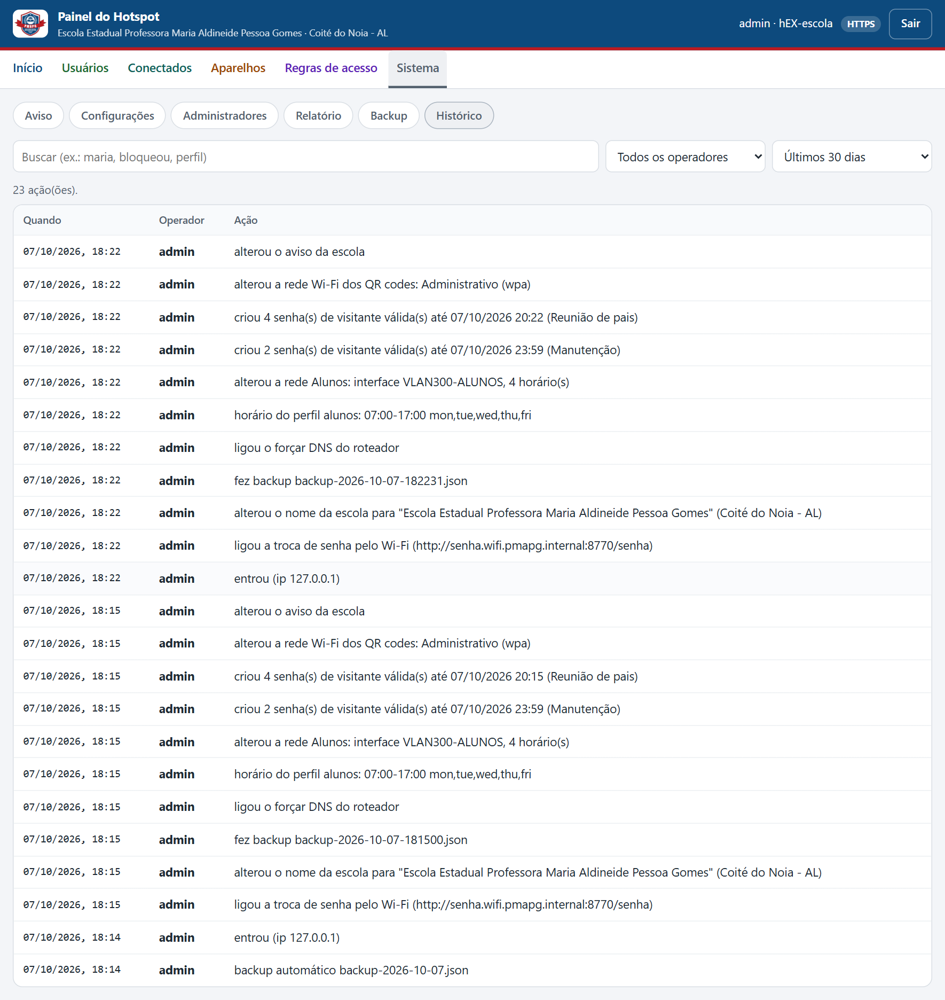
Figura 25 – Histórico
Use a busca (ex.: maria, bloqueou), o filtro por operador e o período. As senhas nunca aparecem no histórico.
10. Troca de senha pelo Wi-Fi
Professores, funcionários e alunos cadastrados podem trocar a própria senha do Wi-Fi pelo celular, sem precisar procurar a secretaria. Visitantes não trocam, porque a senha deles é temporária.
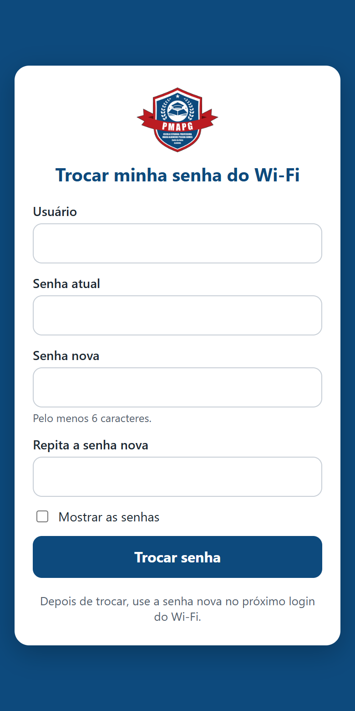
Figura 26 – Página de troca de senha no celular
Conectado ao Wi-Fi Administrativo, na tela de conectado, toque em Trocar minha senha.
Preencha o usuário, a senha atual e a senha nova duas vezes (pelo menos 6 caracteres).
Toque em Trocar senha. A senha nova vale a partir do próximo login.
5 tentativas erradas seguidas bloqueiam a página para aquele aparelho por 15 minutos.
Quem está no Wi-Fi só consegue abrir essa página; o restante do painel continua fechado para a rede da escola.
Cada troca fica no Histórico e entra na contagem do relatório mensal. A senha em si nunca é registrada.
O link só aparece se a troca estiver ligada em Sistema → Configurações.
Esqueceu a senha?Pela página só troca quem sabe a senha atual. Quem esqueceu deve procurar um gestor, que gera uma nova em Usuários → Cadastrados com o botão Nova senha.
11. Perguntas frequentes
O painel não abre.
Confirme que o computador do painel está ligado. Ele inicia sozinho com o Windows, mas pode levar até um minuto depois de ligar. Se continuar sem abrir, avise o responsável pela TI.
Aparece "Não foi possível falar com o MikroTik".
O roteador pode estar reiniciando ou o cabo do computador desconectado. Aguarde um minuto e tente de novo.
A pessoa diz que a senha não funciona.
Procure o usuário em Usuários → Cadastrados: veja se está Ativo e confira a senha na lista. Se preciso, use Nova senha e entregue a nova.
A senha está certa, mas o login é recusado.
Veja em Início o cartão Sessões do hotspot. Se estiver perto de 200, o limite da licença foi atingido: é preciso que outras pessoas saiam, ou desconectar aparelhos em Conectados agora. Também confira se o perfil da pessoa não tem limite de aparelhos já usado em outro celular.
O visitante não consegue entrar.
Confira em Usuários → Visitantes se a senha ainda está na lista (Não usado ou Em uso). Senhas vencidas, ou que passaram do prazo para usar, são apagadas sozinhas; crie outra. Se o Início mostrar a faixa vermelha do relógio, o problema é a hora do roteador.
Os alunos estão sem internet.
Fora dos horários cadastrados a rede Alunos fica fechada. Veja o estado em Regras de acesso → Rede Alunos e, se for o caso, use Liberar agora.
A impressão saiu sem os QR codes.
Feche a janela de impressão e clique em imprimir de novo. Se a escola tiver mudado o nome do Wi-Fi, atualize em Sistema → Configurações → Rede Wi-Fi dos QR codes.
O Início mostra um AP fora do ar.
Confira se o AP está ligado na tomada e com o cabo de rede conectado. Quando ele volta, o cartão fica normal em até 30 segundos. Se continuar fora do ar, avise o responsável pela TI, informando o nome do AP e desde quando está fora (aparece em Sistema → Configurações → Pontos de acesso).
O gráfico de uso ou o relatório estão sem dados.
O registro depende do Serviço do painel ativo e do computador do painel ligado. Peça a um administrador full para conferir em Sistema → Configurações.
O link "Trocar minha senha" não aparece no Wi-Fi.
Confira em Sistema → Configurações se a Troca de senha pelo Wi-Fi está ligada e se o Serviço do painel está ativo. Visitantes não veem o link.
Um site bloqueado ainda abre.
Pode levar alguns minutos. Confira se a chave Forçar o DNS do roteador está ligada. Aparelhos com VPN ou "DNS privado" podem escapar do bloqueio.
12. Boas práticas de segurança
Cada gestor com o seu usuário: não compartilhe senhas de administrador. Assim o histórico mostra quem fez cada coisa.
Use o grupo "painel" para quem só administra o Wi-Fi; deixe o grupo "full" apenas para o responsável pela TI.
Clique em Sair ao terminar, principalmente em computadores usados por outras pessoas.
Planilhas com senhas (Exportar com senhas) e backups devem ficar em local seguro e ser apagados quando não forem mais necessários.
Desative o usuário de quem saiu da escola, em vez de esperar.
Visitantes: use o tempo de uso mais curto possível, sempre com Prazo para usar, e encerre os lotes que não forem mais usados.
SuporteDúvidas ou problemas que este manual não resolve: procure o responsável pela TI da escola.